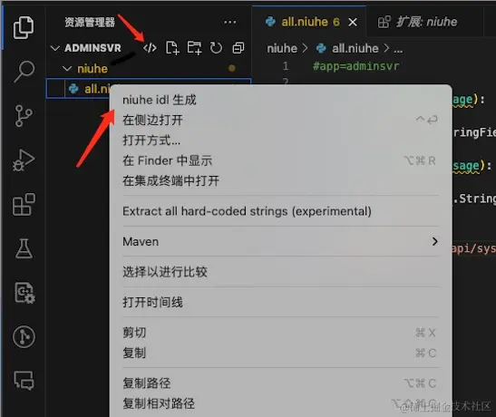
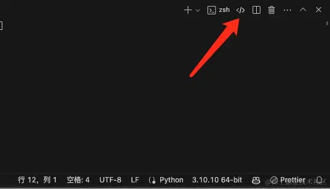
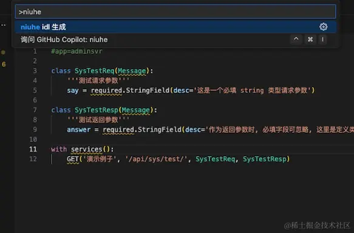

Vscode niuhe 插件是一款面向 golang 的后端 IDL 定义翻译插件, 旨在简化后端开发流程, 提高开发效率. 它可以通过简单的 niuhe idl 语法 定义接口, 生成对应的 go 服务代码, 前端 api 定义, swagger 文档, 以及其他语言的协议定义. 让开发人员专注于业务逻辑, 而不是繁琐的代码生成工作.
核心功能
| 功能模块 | 核心能力 | 适用场景 |
|---|---|---|
| Go语言支持 | 自动生成服务框架代码：包含路由配置、请求参数解析、响应格式处理等基础代码 | 后端开发 |
| TypeScript支持 | 一键生成前端API调用代码，支持Web/小程序/React Native等场景 | 前端开发 |
| 文档生成 | 自动生成Swagger文档，支持导入Postman/Apifox等测试工具 | 接口测试 |
| 多语言协议 | 生成标准化协议文件，支持自定义转换到其他编程语言 | 跨语言协作 |
Go服务核心特性
| 功能 | 优势 |
|---|---|
| 智能路由 | 自动根据文件结构生成路由配置，无需手动维护 |
| 参数处理 | 内置请求参数校验和响应格式化，专注业务逻辑开发 |
| XORM集成 | 自动生成数据库操作代码（表结构定义、DAO层、服务层） |
| 常量管理 | 统一管理业务常量，提升代码可维护性 |
配套解决方案
开提供开箱即用的管理系统模板，加速企业级应用开发：
| 解决方案 | 亮点 |
|---|---|
| Admin-Core | 内置RBAC权限体系，快速实现用户/角色/菜单管理 |
| Vue3管理模板 | 基于流行技术栈（Vue3+Element Plus），提供完整后台功能组件 |
实践案例
- admin-core-niuhe 完整示例项目（后端）
- admin-core-test 前端框架接入示例
- 在线演示 Vue3管理后台演示（账号: admin / 123456）
快速开始
本章节将介绍如何安装与激活插件，实现一个 Hellow World 并介绍 niuhe 语法
1. 安装与激活
- VSCode 插件市场搜索
niuhe - 点击安装后，可通过下列四种方式激活插件生成代码
- 方式1: 点击资源管理器顶部出现的
</>图标 - 方式2: 点击工具栏中的
</>图标 - 方式3: 在资源管理器中选中任意文件并右键中
niuhe idl 生成 - 方式4:
Command + Shift + P快捷键中 输入niuhe查找niuhe idl 生成
- 方式1: 点击资源管理器顶部出现的
| 方式1和3 | 方式 2 | 方式4 |
|---|---|---|
|  |  |  |
2. Hello World 实战
本教程代码库为 niuhe-mdbook
在项目根目录创建：
#app=demo
class HelloReq():
'''测试请求'''
name = required.String(desc='用户名')
class HelloResp(Message):
'''测试响应'''
greeting = required.String(desc='问候语')
with services():
GET('示例接口', '/api/hello/world/', HelloReq, HelloResp)
点击 </> 生成代码后，将自动创建如下文件：
.
├── README.md // 项目说明
├── conf
│ └── demo.yaml // 配置文件
├── makefile // linux/unix makefile 脚本
├── niuhe
│ └── all.niuhe // 项目入口文件
├── niuhe.log
└── src
└── demo
├── app
│ ├── api
│ │ ├── protos
│ │ │ └── gen_protos.go // 自定生成的 go 请求和响应结构定义文件
│ │ └── views
│ │ ├── gen_hello_views.go // 自定义生成的 go 路由处理器文件
│ │ ├── hello_views.go // hello 香港 view 的实现文件
│ │ └── init.go
│ └── common
│ └── consts
│ └── gen_consts.go // 常量定义文件
├── config
│ └── config.go // 配置文件定义, 读取 conf/demo.yaml 内容
├── go.mod
├── main.go // 项目入口
└── xorm
├── daos
│ └── init.go // dao 层基本定义定义
├── models
│ └── models.go // model 层定义示例
└── services
└── init.go // service 层基本定义
接下来我们跟随 README.md 指引，执行下列命令运行项目
cd src/demo && go mod init demo && go mod tidy && go mod vendor && cd ../../ && make run
此时我们在浏览器访问链接: http://localhost:19999/api/hello/world/, 即可看到返回的问候语。
{"message":"Name（必填）","result":-1}
由此我们完成了一个简单的 Hello World 示例。
语法介绍
niuhe 语法主要包括注释,常量(枚举), 数据类型(class/struct), 接口定义(路由), 数据成员定义五个部分。
idl 语法大致与 python 相通, 插件自定义了 niuhe 后缀的语法高亮和自动补全，也可选择 python 来做语法高亮
应用名称
应用名称需定义在入口文件(all.niuhe)最开始，使用 #app=应用名 来定义。
#app=demo
注释
注释同 python 相同, 单行注释使用 #, 多行注释使用三个引号 ''', 类和常量的说明用注释的方式写在类定义的下一行。
常量(枚举)
class Language(ConstGroup):
'''语言枚举类'''
ZH = Item("zh", "中文")
EN = Item("en", "英文")
class LanguageType(ConstGroup):
'''语言类型枚举'''
ZH_CN = Item(1, "简体中文")
ZH_TW = Item(2, "繁体中文")
常量定义以 class 开头, 继承 ConstGroup, 内部通过 Item 来定义具体的常量值。常量仅支持 String 和 Integer 类型，且必须指定一个唯一标识符和一个显示名称。上述定义生成后的代码(src/demo/app/common/consts/gen_consts.go)为
package consts
// Generated by niuhe.idl
import "github.com/ma-guo/niuhe"
var Language struct {
*niuhe.StringConstGroup
ZH niuhe.StringConstItem `name:"中文" value:"zh"` // value: zh, name: 中文
EN niuhe.StringConstItem `name:"英文" value:"en"` // value: en, name: 英文
}
// 语言类型枚举
var LanguageType struct {
*niuhe.IntConstGroup
ZH_CN niuhe.IntConstItem `name:"简体中文" value:"1"` // value: 1, name: 简体中文
ZH_TW niuhe.IntConstItem `name:"繁体中文" value:"2"` // value: 2, name: 繁体中文
}
func init() {
niuhe.InitConstGroup(&Language)
niuhe.InitIntConstGroup(&LanguageType)
}
数据类型(class/struct)
在上一节的 hello world 示例中，我们定义了一个简单的 接口的入参和出参类
class HelloReq():
'''测试请求'''
name = required.String(desc='用户名')
class HelloRsp(Message):
'''测试响应'''
greeting = required.String(desc='问候语')
数据类型定义以 class 开头, 继承 Message, Message 可不写, 类后跟随以注释形式的类说明(可选)和成员定义。
当类无成员时以 pass 做标记即可，可如下:
class HelloReq():
'''测试请求, 无参数'''
pass
上述定义生成的 struct 代码为:
package protos
// Generated by niuhe.idl
// 此文件由 niuhe.idl 自动生成, 请勿手动修改
// 测试请求
type HelloReq struct {
Name string `json:"name" zpf_name:"name" zpf_reqd:"true"` // 用户名
}
// 测试响应
type HelloRsp struct {
Greeting string `json:"greeting" zpf_name:"greeting" zpf_reqd:"true"` // 问候语
}
类的继承
类继承自Message可以继承自自定义的其他类, 通过在类名后添加括号的方式实现:
class NihaoReq(HelloReq):
'''你好请求'''
mingzi = required.String(desc='名字')
生成的 struct 代码为:
// 你好请求
type NihaoReq struct {
Name string `json:"name" zpf_name:"name" zpf_reqd:"true"` // 用户名
Mingzi string `json:"mingzi" zpf_name:"mingzi" zpf_reqd:"true"` // 名字
}
成员定义
成员定于语法为:
member_name = label.type(desc='', cls=..., group=...)
其中
label可以是required(必填的),optional(可选的),repeated(重复的/数组),type可以是Integer,Decimal,Float,Long,String,Boolean,Message,Enum,StringEnum,File,Any11种数据类型。desc: 描述信息, 可选, 建议填写成员字段说明, 否则失去文档定义语言意义。group: 指定enum的group, 仅当type为Enum和StringEnum时有效和必填, 如lang=required.Enum(desc='语言枚举', houp=LanguageType)cls: 指定类的类型，仅当type为Enum和StringEnum时有效和必填，如message=optional.Message(desc='消息体',cls=HelloReq)这里required和optional仅对入参有意义, 出参在go中无此限制。repeated在入参中同optional
接口定义(路由)
接口定义以 with services(): 为开始标记, 后面跟随一个或多个路由定义，每个路由定义如下:
http_method('接口说明', 'api_path(/mode/view/method/)', 入参类名（可选), 出参类名(可选))
其中
http_method可以是GET,POST,PUT,DELETE,PATCH,HEAD,OPTIONS等 http method接口说明: 接口的简要描述, 如'获取用户信息'api_path: 必须是三段式 api 的路径, 如/api/hello/world/入参类名: 可选, 如HelloReq当不填写时，得自己处理入参和出参的解析, 入参和出参得同时可选或同时必填。出参类名: 可选, 如HelloRsp当不填写时，得自己处理入参和出参的解析, 入参和出参得同时可选或同时必填。 本章节第二小节定义的路由如下:
with services():
GET('示例接口', '/api/hello/world/', NihaoReq, HelloRsp)
生成的代码在 src/demo/app/api/views/[gen_]hello_views.go 文件中。
include 其他文件
在定义类时，可以通过 include 关键字引入其他文件中的类.
如在 comm.niuhe 文件中定义了如下内容:
# 公共类型定义
class NoneResp()
'''空响应'''
pass
class NoneReq():
'''空请求'''
pass
此时可在 all.niuhe 文件中通过 include 引入:
include('comm.niuhe')
// 然后通过 comm.NoneReq, comm.NoneResp 来使用这些类
其他说明
入参参数中, 并不支持解析复杂结构, 如 Message, Any, Dict 等. 而出参则无此限制, 可以自由定义返回的 json 数据格式。
入门指南
本章节将介绍如何实现 Hello World, 如何生成 Swagger 文档、使用 Swagger 文档以及生成 TypeScript 定义。
Hello World
在第二部分第二节种们通过定义 niuhe/all.niuhe 实现了一个简单的 Hello World 示例。本节我们将介绍如何实现它。
我们将 src/demo/app/api/views/hello_views.go 中 World_GET 方法修改为如下:
func (v *Hello) World_GET(c *niuhe.Context, req *protos.HelloReq, rsp *protos.HelloRsp) error {
rsp.Greeting = "Hello World " + req.Name
return nil
}
重新运行程序并访问如下链接 http://localhost:19999/api/hello/world/?name=Tom，即可看到返回的问候语。
{
"data": {
"greeting": "Hello World Tom"
},
"result": 0
}
这里 github.com/ma-guo/niuhe 包提供了一些基础的功能，如上下文管理、请求参数解析等和返回结构包装。我们只关心具体业务逻辑即可。
生成 Swagger 文档
Swagger 文档是一种以特定格式（如 JSON 或 YAML）编写的文件，用于对 RESTful API 进行详细的描述和说明。它提供了一种标准化的方式来定义 API 的端点、请求和响应的结构、参数、身份验证机制等信息，使得开发人员、测试人员、文档编写者以及其他相关人员能够全面了解 API 的功能和使用方法，从而更高效地进行开发、集成和测试等工作。
在 niuhe/.config.json5 文件 langs 配置中添加 docs 即可在生成文件时生成协议的 swagger 文档。
生成的文档位于 docs/swagger.json, 同时生成了 niuhe/.docs.json5 自定义文件, 可在自定义文件中定制输出内容。
生成的 docs/swagger.json 文件可直接导入到 apifox 等支持 Swagger 协议的测试工具中进行测试和使用。也可读取 niuhe/.docs.json5 生成 url 输出到网页上, 具体配置如下:
示例
假设我们有一个简单的 API，包含以下内容：
with services():
GET('示例接口', '/api/hello/world/', HelloReq, HelloRsp)
GET('协议文档', '/api/hello/docs/')
通过如下代码即可将协议文档输出到网页上：http://localhost:19999/api/hello/docs/
// 协议文档
func (v *Hello) Docs_GET(c *niuhe.Context) {
docs, err := os.ReadFile("./docs/swagger.json")
if err != nil {
niuhe.LogError("read docs file failed: %v", err)
return
}
data := make(map[string]any)
json.Unmarshal(docs, &data)
c.JSON(http.StatusOK, data)
}
生成 typescript api 定义
在开发前端应用时，通常需要根据后端的 API 接口定义来生成相应的 TypeScript 类型。niuhe 插件提供了便捷的方式来自动生成这些类型定义文件。以下是如何生成 TypeScript API 定义的步骤：
1. 添加 ts 语言支持
首先，在 docs/.config.json5 的 langs 中添加 ts。生成代码后会生成如下几个文件:
typings
├── api.ts - API 接口类型定义
├── event.d.ts - 部分公共属性定义
├── request.ts - 请求方法封装
└── types.d.ts - niuhe 中定义的类型定义
2. 自定义文件存储路径
上述生成的四个文件中 event.d.ts 和 request.ts 和 内容是不会变的, 将其复制到目标位置即可。api.ts 和 types.d.ts 需要根据实际情况进行调整。因此在 docs/.config.json5 中添加 tstypes 和 tsapi 两个配置项，分别指定文件存储路径。这两个文件的路径建议为绝对路径。 如配置项所言，可配置多个路径，同时生成多份文件。
进阶操作
本章节主要介绍一些高级功能和使用技巧，帮助你更好地利用 niuhe 进行开发。
xorm 代码生成
在实际开发中, 每添加一个表时，一般就会有对应的增删改查操作, 而这些操作代码又高度相似，copy 代码时枯燥乏味。因此在插件中添加了 xorm 基本代码生成功能。让编码更聚焦核心功能。
如何使用
插件仅在 niuhe/.model.niuhe 中读取表定义并生成代码。
#mode 可选 默认值为 api,
#niuhe 可选, 默认值为 False, 在生成对应的 niuhe 是否覆盖已存在的 niuhe 文件内容
#dao 可选, 默认值为 False, 在生成对应的 dao 是否覆盖已存在的 dao 文件内容
#service 可选, 默认值为 False, 在生成对应的 service 是否覆盖已存在的 service 文件内容
#model 可选, 默认值为 False, 在生成对应的 model 是否覆盖已存在的 model 文件内容
#vite 可选, 默认值为 False, 在生成对应的 vite 是否覆盖已存在的 vite 文件内容, 需在 .config.json5 中 langs 中添加 "vite"
#这里是做示例用, 实际开发中直接写 class Config():即可
class Config(mode='api', niuhe=True, dao=True, service=True, model=True, vite=True):
'''系统配置表'''
name = required.String(desc='配置名称', index=True, search=True, len=255, notnull=True)# index 加索引, len varchar 最大长度, notnull 是否为空 search 分页查询时是否出现在参数中
value = required.Long(desc='配置值', search=True)
上述参数说明
| 参数 | 类型 | 默认值 | 必须 | 描述 |
|---|---|---|---|---|
| mode | str | 'api' | 可选 | 生成代码的在哪个mode下 |
| niuhe | bool | False | 可选 | 是否覆盖已存在的 niuhe 文件内容 |
| dao | bool | False | 可选 | 是否覆盖已存在的 dao 文件内容 |
| service | bool | False | 可选 | 是否覆盖已存在的 service 文件内容 |
| model | bool | False | 可选 | 是否覆盖已存在的 model 文件内容 |
| vite | bool | False | 可选 | 是否覆盖已存在的 vite 文件内容, 需要配置 .config.json5 中的 langs 添加 "vite" |
当首次生成代码时, 会生成以下几个文件(以 #app=demo)
- niuhe/api_config.niuhe (需要手动 include 到 all.niuhe 中)
- src/demo/xorm/models/config.go
- src/demo/xorm/daos/config_dao.go
- src/demo/xorm/services/config_svc.go
- src/demo/app/api/views/config_views.go (include 后才会生成)
- src/demo/app/api/views/gen_config_views.go (include 后才会生成)
- vite/api_config.vue (需要在 .config.json5 中 langs 添加 "vite")
除上述文件外, 如配置了 docs, ts 等语言的生成，也会更新对应的文件内容. 各个生成的文件内容如下:
本节以下文件内容均为插件生成
niuhe/api_config.niuhe
class ConfigItem():
'''系统配置表'''
id = optional.Long(desc='id')
name = required.StringField(desc='配置名称')
value = required.LongField(desc='配置值')
create_at = optional.String(desc='创建时间')
update_at = optional.String(desc='更新时间')
class ConfigFormReq():
'''请求 Config 信息'''
id = required.Long()
class ConfigPageReq():
'''分页查询 Config 信息'''
page = required.Integer(desc='页码')
size = required.Integer(desc='每页数量')
value = required.LongField(desc='配置值')
class ConfigPageRsp():
'''分页查询 Config 信息'''
total = required.Long(desc='总数')
items = repeated.Message(cls=ConfigItem, desc='Config信息')
class ConfigDeleteReq():
'''批量删除 Config 信息'''
ids = repeated.Long(desc='记录id列表')
class ConfigNoneRsp():
'''Config 无数据返回'''
pass
with services():
GET('分页查询获取 Config 信息', '/api/config/page/', ConfigPageReq, ConfigPageRsp)
GET('查询获取 Config 信息', '/api/config/form/', ConfigFormReq, ConfigItem)
POST('添加 Config 信息', '/api/config/add/', ConfigItem, ConfigItem)
POST('更新 Config 信息', '/api/config/update/', ConfigItem, ConfigItem)
DELETE('删除 Config 信息', '/api/config/delete/', ConfigDeleteReq, ConfigNoneRsp)
model 表定义
src/demo/xorm/models/config.go
package models
// Generated by niuhe.idl
// 如要同步表结构, 需要手动将 Config 手动添加到 models.go 文件的 GetSyncModels 数组中
import (
"demo/app/api/protos"
"time"
)
// 系统配置表
type Config struct {
Id int64 `xorm:"NOT NULL PK AUTOINCR INT(11)"`
Name string `xorm:"VARCHAR(255) COMMENT('配置名称')"` // 配置名称
Value int64 `xorm:"INT COMMENT('配置值')"` // 配置值
CreateAt time.Time `xorm:"created"` // 创建时间
UpdateAt time.Time `xorm:"updated"` // 更新时间
DeleteAt time.Time `xorm:"deleted"` // 删除时间
}
func (row *Config) ToProto(item *protos.ConfigItem) *protos.ConfigItem {
if item == nil {
item = &protos.ConfigItem{}
}
item.Id = row.Id
item.Name = row.Name
item.Value = row.Value
item.CreateAt = row.CreateAt.Format(time.DateTime)
item.UpdateAt = row.UpdateAt.Format(time.DateTime)
return item
}
dao 表定义
src/demo/xorm/daos/config_dao.go
package daos
// Generated by niuhe.idl
import (
"demo/xorm/models"
"github.com/ma-guo/niuhe"
)
// 系统配置表
type _ConfigDao struct {
*Dao
}
// 系统配置表
func (dao *Dao) Config() *_ConfigDao {
return &_ConfigDao{Dao: dao}
}
// 根据ID获取数据
func (dao *_ConfigDao) GetByIds(ids ...int64) ([]*models.Config, error) {
rows := []*models.Config{}
session := dao.db()
err := session.In("id", ids).Desc("`id`").Find(&rows)
if err != nil {
niuhe.LogInfo("GetByIds Config error: %v", err)
return nil, err
}
return rows, nil
}
// 分页获取数据
func (dao *_ConfigDao) GetPage(page, size int, value int64) ([]*models.Config, int64, error) {
rows := make([]*models.Config, 0)
session := dao.db()
dao.Like(session, "`value`", value)
dao.Limit(session, page, size)
total, err := session.Desc("`id`").FindAndCount(&rows)
if err != nil {
niuhe.LogInfo("GetPage Config error: %v", err)
return nil, 0, err
}
return rows, total, nil
}
service 表定义
src/demo/xorm/services/config_svc.go
package services
// Generated by niuhe.idl
import (
"github.com/ma-guo/niuhe"
"demo/xorm/models"
)
// 系统配置表
type _ConfigSvc struct {
*_Svc
}
// 系统配置表
func (svc *_Svc) Config() *_ConfigSvc {
return &_ConfigSvc{svc}
}
// 获取单个数据
func (svc *_ConfigSvc) GetById(id int64) (*models.Config, bool, error) {
if id <= 0 {
return nil, false, nil
}
row := &models.Config{Id: id}
has, err := svc.dao().GetBy(row)
if err != nil {
niuhe.LogInfo("GetById Config error: %v", err)
}
return row, has, err
}
// 获取单个数据
func (svc *_ConfigSvc) GetBy(row *models.Config) (bool, error) {
has, err := svc.dao().GetBy(row)
if err != nil {
niuhe.LogInfo("GetBy Config error: %v", err)
}
return has, err
}
// 更新数据
func (svc *_ConfigSvc) Update(row *models.Config) (bool, error) {
has, err := svc.dao().Update(row.Id, row)
if err != nil {
niuhe.LogInfo("Update Config error: %v", err)
}
return has, err
}
// 插入数据
func (svc *_ConfigSvc) Insert(rows ...*models.Config) error {
if len(rows) == 0 {
return nil
}
// 2000条是经验值, 可根据自己需要更改
batchSize := 2000
for i := 0; i < len(rows); i += batchSize {
end := i + batchSize
if end > len(rows) {
end = len(rows)
}
_, err := svc.dao().Insert(rows[i:end])
if err != nil {
niuhe.LogInfo("Insert Config error: %v", err)
return err
}
}
return nil
}
// 删除数据
func (svc *_ConfigSvc) Delete(rows []*models.Config) error {
if len(rows) == 0 {
return nil
}
_, err := svc.dao().Delete(rows)
if err != nil {
niuhe.LogInfo("Delete Config error: %v", err)
}
return err
}
// 根据 id 获取 map 数据
func (svc *_ConfigSvc) GetByIds(ids ...int64) (map[int64]*models.Config, error) {
rowsMap := make(map[int64]*models.Config, 0)
if len(ids) == 0 {
return rowsMap, nil
}
rows, err := svc.dao().Config().GetByIds(ids...)
if err != nil {
niuhe.LogInfo("GetByIds Config error: %v", err)
return nil, err
}
for _, row := range rows {
rowsMap[row.Id] = row
}
return rowsMap, nil
}
// 分页获取数据
func (svc *_ConfigSvc) GetPage(page, size int, value int64) ([]*models.Config, int64, error) {
rows, total, err := svc.dao().Config().GetPage(page, size, value)
if err != nil {
niuhe.LogInfo("GetPage Config error: %v", err)
}
return rows, total, nil
}
config_views 定义
src/demo/xorm/models/config_views.go
package services
// Generated by niuhe.idl
import (
"github.com/ma-guo/niuhe"
"demo/xorm/models"
)
// 系统配置表
type _ConfigSvc struct {
*_Svc
}
// 系统配置表
func (svc *_Svc) Config() *_ConfigSvc {
return &_ConfigSvc{svc}
}
// 获取单个数据
func (svc *_ConfigSvc) GetById(id int64) (*models.Config, bool, error) {
if id <= 0 {
return nil, false, nil
}
row := &models.Config{Id: id}
has, err := svc.dao().GetBy(row)
if err != nil {
niuhe.LogInfo("GetById Config error: %v", err)
}
return row, has, err
}
// 获取单个数据
func (svc *_ConfigSvc) GetBy(row *models.Config) (bool, error) {
has, err := svc.dao().GetBy(row)
if err != nil {
niuhe.LogInfo("GetBy Config error: %v", err)
}
return has, err
}
// 更新数据
func (svc *_ConfigSvc) Update(row *models.Config) (bool, error) {
has, err := svc.dao().Update(row.Id, row)
if err != nil {
niuhe.LogInfo("Update Config error: %v", err)
}
return has, err
}
// 插入数据
func (svc *_ConfigSvc) Insert(rows ...*models.Config) error {
if len(rows) == 0 {
return nil
}
// 2000条是经验值, 可根据自己需要更改
batchSize := 2000
for i := 0; i < len(rows); i += batchSize {
end := i + batchSize
if end > len(rows) {
end = len(rows)
}
_, err := svc.dao().Insert(rows[i:end])
if err != nil {
niuhe.LogInfo("Insert Config error: %v", err)
return err
}
}
return nil
}
// 删除数据
func (svc *_ConfigSvc) Delete(rows []*models.Config) error {
if len(rows) == 0 {
return nil
}
_, err := svc.dao().Delete(rows)
if err != nil {
niuhe.LogInfo("Delete Config error: %v", err)
}
return err
}
// 根据 id 获取 map 数据
func (svc *_ConfigSvc) GetByIds(ids ...int64) (map[int64]*models.Config, error) {
rowsMap := make(map[int64]*models.Config, 0)
if len(ids) == 0 {
return rowsMap, nil
}
rows, err := svc.dao().Config().GetByIds(ids...)
if err != nil {
niuhe.LogInfo("GetByIds Config error: %v", err)
return nil, err
}
for _, row := range rows {
rowsMap[row.Id] = row
}
return rowsMap, nil
}
// 分页获取数据
func (svc *_ConfigSvc) GetPage(page, size int, value int64) ([]*models.Config, int64, error) {
rows, total, err := svc.dao().Config().GetPage(page, size, value)
if err != nil {
niuhe.LogInfo("GetPage Config error: %v", err)
}
return rows, total, nil
}
新增的 protos 定义
src/demo/api/protos/gen_protos.go
// 系统配置表
type ConfigItem struct {
Id int64 `json:"id" zpf_name:"id"` // id
Name string `json:"name" zpf_name:"name" zpf_reqd:"true"` // 配置名称
Value int64 `json:"value" zpf_name:"value" zpf_reqd:"true"` // 配置值
CreateAt string `json:"create_at" zpf_name:"create_at"` // 创建时间
UpdateAt string `json:"update_at" zpf_name:"update_at"` // 更新时间
}
// 请求,Config,信息
type ConfigFormReq struct {
Id int64 `json:"id" zpf_name:"id" zpf_reqd:"true"`
}
// 分页查询,Config,信息
type ConfigPageReq struct {
Page int `json:"page" zpf_name:"page" zpf_reqd:"true"` // 页码
Size int `json:"size" zpf_name:"size" zpf_reqd:"true"` // 每页数量
Value int64 `json:"value" zpf_name:"value" zpf_reqd:"true"` // 配置值
}
// 分页查询,Config,信息
type ConfigPageRsp struct {
Total int64 `json:"total" zpf_name:"total" zpf_reqd:"true"` // 总数
Items []*ConfigItem `json:"items" zpf_name:"items"` // Config信息
}
// 批量删除,Config,信息
type ConfigDeleteReq struct {
Ids []int64 `json:"ids" zpf_name:"ids"` // 记录id列表
}
// Config,无数据返回
type ConfigNoneRsp struct {
}
vite 定义
文件路径 vite/api_config.vue。vite 需结合 vue3-element-admin 库使用, 是生成的增删改查 api 管理页面内容。
<template>
<div class="app-container">
<div class="search-container">
<el-form ref="queryFormRef" :model="queryParams" :inline="true">
<el-form-item prop="value" label="配置值">
<el-input v-model="queryParams.value" placeholder="配置值" clearable @keyup.enter="fetchPage" />
</el-form-item>
<el-form-item>
<el-button type="primary" @click="fetchPage"><i-ep-search />搜索</el-button>
<el-button @click="resetQuery"><i-ep-refresh />重置</el-button>
</el-form-item>
</el-form>
</div>
<el-card shadow="never" class="table-container">
<template #header>
<el-button @click="openDialogWithAdd()" type="success"><i-ep-plus />新增</el-button>
<el-button type="danger" :disabled="state.ids.length === 0"
@click="bantchDelete()"><i-ep-delete />删除</el-button>
</template>
<el-table ref="dataTableRef" v-loading="state.loading" :data="configItems" highlight-current-row border
@selection-change="handleSelectionChange">
<el-table-column type="selection" width="55" align="center" />
<el-table-column label="ID" prop="id" align="center" />
<el-table-column label="配置名称" prop="name" align="center" />
<el-table-column label="配置值" prop="value" align="center" />
<el-table-column fixed="right" label="操作" width="140" align="center">
<template #default="{ row }">
<el-button type="primary" size="small" link @click="openDialogWithEdit(row.id)">
<i-ep-edit />编辑
</el-button>
<el-button type="primary" size="small" link @click="handleDelete(row.id)">
<i-ep-delete />删除
</el-button>
</template>
</el-table-column>
</el-table>
<pagination v-if="state.total > 0" v-model:total="state.total" v-model:page="queryParams.page"
v-model:limit="queryParams.size" @pagination="fetchPage" />
</el-card>
<!-- Config 表单弹窗 -->
<el-dialog v-model="state.dialogVisible" :title="state.dialogTitle" @close="closeDialog">
<el-form ref="configFormRef" :model="formData" :rules="rules" label-width="100px">
<el-form-item label="ID" prop="id" v-if="formData.id > 0">
<el-input v-model="formData.id" disabled placeholder="" />
</el-form-item>
<el-form-item prop="name" label="配置名称">
<el-input v-model="formData.name" placeholder="配置名称" clearable />
</el-form-item>
<el-form-item prop="value" label="配置值">
<el-input v-model="formData.value" placeholder="配置值" clearable />
</el-form-item>
</el-form>
<template #footer>
<div class="dialog-footer">
<el-button type="primary" @click="handleSubmit">确 定</el-button>
<el-button @click="closeDialog">取 消</el-button>
</div>
</template>
</el-dialog>
</div>
</template>
<script setup lang="ts">
import { setConfigAdd } from "@/api/demo/api";
import { setConfigUpdate } from "@/api/demo/api";
import { deleteConfigDelete } from "@/api/demo/api";
import { getConfigForm } from "@/api/demo/api";
import { getConfigPage } from "@/api/demo/api";
defineOptions({
name: "config",
inheritAttrs: false,
});
const queryFormRef = ref(ElForm);
const configFormRef = ref(ElForm);
const configItems = ref<Demo.ConfigItem[]>();
const state = reactive({
loading: false,
total: 0,
ids: [] as number[],
dialogVisible: false,
dialogTitle: "",
});
const queryParams = reactive<Demo.ConfigPageReq>({
page: 1,
size: 10,
value: 0,
});
const formData = reactive<Demo.ConfigItem>({
id: 0,
name: "",
value: 0,
create_at: "",
update_at: ""
});
// 根据需要添加校验规则
const rules = reactive({
// name: [{ required: true, message: "本字段必填", trigger: "blur" }],
});
/** 查询 */
const fetchPage = async () => {
state.loading = true;
const rsp = await getConfigPage(queryParams);
state.loading = false;
if (rsp.result == 0) {
configItems.value = rsp.data.items;
state.total = rsp.data.total;
}
}
/** 重置查询 */
function resetQuery() {
queryFormRef.value.resetFields();
queryParams.page = 1;
fetchPage();
}
/** 行checkbox 选中事件 */
function handleSelectionChange(selection: any) {
state.ids = selection.map((item: any) => item.id);
}
/** 打开添加弹窗 */
function openDialogWithAdd() {
state.dialogVisible = true;
state.dialogTitle = "添加Config";
resetForm();
}
/** 打开编辑弹窗 */
const openDialogWithEdit = async (roleId: number) => {
state.dialogVisible = true;
state.dialogTitle = "修改Config";
state.loading = true;
const rsp = await getConfigForm({ id: roleId });
state.loading = false;
if (rsp.result == 0) {
Object.assign(formData, rsp.data);
}
}
/** 保存提交 */
function handleSubmit() {
configFormRef.value.validate((valid: any) => {
if (valid) {
if (formData.id) {
updateRowRecord();
} else {
addRowRecord();
}
}
});
}
/** 新增记录 */
const addRowRecord = async () => {
state.loading = true;
const rsp = await setConfigAdd(formData);
state.loading = false
if (rsp.result == 0) {
ElMessage.success("添加成功");
closeDialog();
resetQuery();
}
}
/** 修改记录 */
const updateRowRecord = async () => {
state.loading = true;
const rsp = await setConfigUpdate(formData);
state.loading = false
if (rsp.result == 0) {
ElMessage.success("修改成功");
closeDialog();
resetQuery();
}
}
/** 关闭表单弹窗 */
function closeDialog() {
state.dialogVisible = false;
resetForm();
}
/** 重置表单 */
function resetForm() {
const value = configFormRef.value;
if (value) {
value.resetFields();
value.clearValidate();
}
formData.id = 0;
formData.name = "";
formData.value = 0;
formData.create_at = "";
formData.update_at = "";
}
/** 删除 Config */
function handleDelete(id: number) {
ElMessageBox.confirm("确认删除已选中的数据项?", "警告", {
confirmButtonText: "确定",
cancelButtonText: "取消",
type: "warning",
}).then(async () => {
state.loading = true;
const rsp = await deleteConfigDelete({ ids: [id] });
state.loading = false;
if (rsp.result == 0) {
ElMessage.success("删除成功");
resetQuery();
}
});
}
/** 批量删除 */
const bantchDelete = () => {
if (state.ids.length <= 0) {
ElMessage.warning("请勾选删除项");
return;
}
ElMessageBox.confirm("确认删除已选中的数据项?", "警告", {
confirmButtonText: "确定",
cancelButtonText: "取消",
type: "warning",
}).then(async () => {
state.loading = true;
const rsp = await deleteConfigDelete({ ids: state.ids });
state.loading = false;
if (rsp.result == 0) {
ElMessage.success("删除成功");
}
resetQuery();
});
};
onMounted(() => {
fetchPage();
});
</script>
生成其他协议
在开发过程中，我们可能需要生成不同语言的协议文件。niuhe插件支持 go, ts, vite 等协议代码生成。同时为了方便其他语言使用。将 niuhe 协议以 json 格式输出了完整的协议内容，可以很方便地被其他语言解析和使用。以下是如何生成其他语言协议的步骤：
1. 配置 .config.json5
首先，在 .config.json5 的 langs 中添加 protocol 配置项.
2. protocol 定义
配置 protocol 后, 生成代码时会在 docs 文件下生成 protocol.json 文件。协议定义为:
declare namespace Protocol {
interface StringEnum {
value: string // 枚举值 - 数字也是 string
name: string // 字段名
desc: string // 描述
}
// 枚举类型
interface Enum {
mode: string
type: 'string' | 'integer'
name: string
desc: string
values: StringEnum[]
}
interface Field {
label: string// required, optional, repeated, mapping
type: string // 'integer', 'decimal', 'float', 'long', 'string', 'boolean', 'message', 'enum', 'stringenum','file' 'dict' 'any'
name: string // 字段名
desc: string // 描述
ref?: string // 引用的结构
}
interface Message {
mode: string //api
name: string // 名称
desc: string // 描述
fields: Field[]
}
interface Route {
method: string // post, get[, put, patch, delete, head, options]
url: string // /api/sys/ts/
mode: string // api
desc: string // 描述
req?: Message
rsp?: Message
}
interface Docs {
app: string
/** api 路由信息 */
routes: Route[]
/** 数组 */
enums: {
[mode_name: string]: Enum
}
/** 消息类型 */
messages: {
[mode_name: string]: Message
}
}
}
go 语言解析为 kotlin 版例子
通过解析上述协议文件可得到请求方法, 路径, 入参和出参的详细定义。下面为 go 语言解析出 kotlin 版本的一个例子。
package protocol
import (
"encoding/json"
"fmt"
"strings"
"unicode"
)
type StringEnum struct {
Value string `json:"vallue"` // 枚举值 - 数字也是 string
Name string `json:"name"` // 字段名
Desc string `json:"desc"` // 描述
}
// 枚举类型
type Enum struct {
Mode string `json:"mode"`
Etype string `json:"type"` // 'string' | 'integer'
Name string `json:"name"`
Desc string `json:"desc"`
Values []StringEnum `json:"values"`
}
type Field struct {
Label string // required, optional, repeated, mapping
Type string `json:"type"` // 'integer', 'decimal', 'float', 'long', 'string', 'boolean', 'message', 'enum', 'stringenum','file' 'dict' 'any'
Name string `json:"name"` // 字段名
Desc string `json:"desc"` // 描述
Ref string `json:"ref"` // 引用的结构
}
type Message struct {
Mode string `json:"mode"` //api
Name string `json:"name"` // 名称
Desc string `json:"desc"` // 描述
Fields []*Field `json:"fields"`
}
type Route struct {
Method string `json:"method"` // post, get[, put, patch, delete, head, options]
Url string `json:"url"` // /api/sys/ts/
Mode string `json:"mode"` // api
Desc string `json:"desc"` // 描述
Req *Message `json:"req"`
Rsp *Message `json:"rsp"`
}
type Docs struct {
App string `json:"app"`
/** api 路由信息 */
Routes []Route `json:"routes"`
/** 数组 */
Enums map[string]*Enum `json:"enums"`
/** 消息类型 */
Messages map[string]*Message `json:"messages"`
}
// 解析结果
type ParseResult struct {
Interfaces string
Beans string
}
func (doc *Docs) getKtType(meta *Field) string {
switch meta.Type {
case "integer":
return "Int"
case "decimal":
return "Float"
case "float":
return "Float"
case "long":
return "Long"
case "stringenum":
case "string":
return "String"
case "boolean":
return "Boolean"
case "message":
if meta.Ref != "" {
return doc.fmtName(meta.Ref)
}
return doc.fmtName(meta.Ref)
case "enum":
return "Int"
case "file":
return "Any?"
case "any":
return "Any?"
}
return "Any?"
}
func (doc *Docs) getKtLabel(meta *Field) string {
switch meta.Label {
case "required":
return doc.getKtType(meta)
case "optional":
return doc.getKtType(meta) + "?"
case "repeated":
return "List<" + doc.getKtType(meta) + ">?"
case "mapping":
return "Map<String, " + doc.getKtType(meta) + ">?"
}
return doc.getKtType(meta)
}
func getKtDefault(ntype string) string {
switch ntype {
case "integer":
return "0"
case "decimal":
return "0f"
case "float":
return "0f"
case "long":
return "0"
case "string":
return "\"\""
case "boolean":
return "false"
case "message":
return "null"
case "enum":
return "0"
case "file":
return "null"
case "any":
return "null"
}
return "null"
}
func (doc *Docs) fmtName(name string) string {
// 从 Hrhelper.StringEnum 返回 StringEnum
if strings.Contains(name, ".") {
return name[strings.Index(name, ".")+1:]
}
return name
}
// toCamelCase 函数用于将下划线分隔的字符串转换为驼峰命名法
func (doc *Docs) toCamelCase(s string) string {
// 按下划线分割字符串
parts := strings.Split(s, "_")
var result strings.Builder
for i, part := range parts {
if i == 0 {
// 第一个部分保持原样
result.WriteString(part)
} else {
// 后续部分首字母大写
for j, r := range part {
if j == 0 {
result.WriteRune(unicode.ToUpper(r))
} else {
result.WriteRune(r)
}
}
}
}
return result.String()
}
func (doc *Docs) buildBean(name string, item *Message) string {
var lines strings.Builder
lines.WriteString("@Serializable\n")
lines.WriteString("data class " + doc.fmtName(item.Name) + "(\n")
for _, field := range item.Fields {
if field.Desc != "" {
lines.WriteString("\n\t/** " + field.Desc + " */\n")
}
lines.WriteString("\t@SerialName(\"" + field.Name + "\")\n")
lines.WriteString("\tval " + doc.toCamelCase(field.Name) + ": " + doc.getKtLabel(field) + " = " + getKtDefault(field.Type) + ",\n")
}
lines.WriteString(") {}\n")
return lines.String()
}
func (doc *Docs) buildApi(route Route) string {
var lines strings.Builder
lines.WriteString("\t/**\n")
if route.Desc != "" {
lines.WriteString("\t * " + route.Desc + "\n\t *\n")
}
req := route.Req
if len(req.Fields) > 0 {
lines.WriteString("\t * 请求参数:\n")
for _, value := range req.Fields {
lines.WriteString("\t * @param " + doc.toCamelCase(value.Name) + " " + value.Desc + "\n")
}
}
lines.WriteString("\t */\n")
lines.WriteString("\t@FormUrlEncoded\n")
lines.WriteString(fmt.Sprintf("\t@%v(\"%v\")\n", strings.ToUpper(route.Method), route.Url))
rspRef := route.Rsp
if len(req.Fields) > 0 {
lines.WriteString("\tsuspend fun " + doc.fmtMethodName(route.Url, route.Method) + "(\n")
for _, value := range req.Fields {
lines.WriteString("\t\t@Field(\"" + value.Name + "\") " + doc.toCamelCase(value.Name) + ": " + doc.getKtLabel(value) + ",\n")
}
lines.WriteString("\t): CommRsp<" + doc.fmtName(rspRef.Name) + ">\n")
} else {
lines.WriteString("\tsuspend fun " + doc.fmtMethodName(route.Url, route.Method) + "(): CommRsp<" + doc.fmtName(rspRef.Name) + ">\n")
}
return lines.String()
}
// 将 /api/user/info/, post 转换为 postUserInfo
func (doc *Docs) fmtMethodName(path, method string) string {
method = strings.ToLower(method)
tmps := []string{method}
segs := strings.Split(path, "/")
if len(segs) > 2 {
// 多余两个的取最后两个
segs = segs[len(segs)-3:]
}
tmps = append(tmps, segs...)
return doc.toCamelCase(strings.Join(tmps, "_"))
}
// 解析 protocol 文档
// docs 为 protocol.json 文件内容
func Parse(appName string, docs []byte) (*ParseResult, error) {
info := &Docs{}
err := json.Unmarshal(docs, info)
if err != nil {
return nil, fmt.Errorf("failed to unmarshal protocol docs: %w", err)
}
var interfaces strings.Builder
interfaces.WriteString("\nimport kotlinx.serialization.SerialName\n")
interfaces.WriteString("interface " + appName + "{\n")
for _, route := range info.Routes {
interfaces.WriteString(info.buildApi(route))
}
interfaces.WriteString("}\n")
result := &ParseResult{
Interfaces: interfaces.String(),
}
var beans strings.Builder
beans.WriteString("\nimport kotlinx.serialization.SerialName\n")
beans.WriteString("import kotlinx.serialization.Serializable\n\n")
for name, msg := range info.Messages {
beans.WriteString(info.buildBean(name, msg))
}
result.Beans = beans.String()
return result, nil
}
例子调用
调用例子如下:
func ShowKtProtocol() {
docPath := "you protocol.json path"
docs, err := os.ReadFile(docPath)
if err != nil {
niuhe.LogInfo("read docs error: %v", err)
return
}
result, err := protocol.Parse("HrHelper", docs)
if err != nil {
niuhe.LogInfo("%v", err)
return
}
// 保存到对应的文件
niuhe.LogInfo("%v", result.Interfaces)
niuhe.LogInfo("%v", result.Beans)
}
最佳实践
可结合 niuhe/.config.json5 中的配置 endcmd:[] 在生成代码后执行某个命令将上述解析的结果保存到对应位置获得更佳体验
endcmd 命令使用和讲解
在 niuhe/.config.json5 文件中预留了 endcmd:[] 配置项。这个配置允许你在生成代码后执行自定义的命令。以下是如何使用和讲解 endcmd 命令的步骤：
1. 命令详解
endcmd 为一字符串数组, 默认为空数组。一般第一个为命令名, 后续为参数, 如: go mod tidy 则定义为 ["go","mod","tidy"]。 切勿将所有命令写在一起, 否则可能执行失败。
配套管理后台
本章节主要介绍如何使用 niuhe 插件生成配套的管理后台 admin-core和前端项目vue3-element-admin 的使用
服务端 admin-core 引入
admin-core 是管理后台项目 vue3-element-admi 的后端支持项目。本身也是 niuhe 插件生成的项目. 可在项目中通过简单的设置来接入它
1. main 中引入
以 demo 项目为例, 当前 src/demo/main.go 内容为:
package main
// Generated by niuhe.idl
import (
apiViews "demo/app/api/views"
"demo/config"
"fmt"
"github.com/ma-guo/niuhe"
"os"
)
type baseBoot struct{}
type BaseBoot struct {
baseBoot
}
func (baseBoot) LoadConfig() error {
if len(os.Args) < 2 {
return fmt.Errorf("Usage: %s <config-path>", os.Args[0])
}
return config.LoadConfig(os.Args[1])
}
func (baseBoot) BeforeBoot(svr *niuhe.Server) {}
func (baseBoot) RegisterModules(svr *niuhe.Server) {
svr.RegisterModule(apiViews.GetModule())
}
func (baseBoot) Serve(svr *niuhe.Server) {
svr.Serve(config.Config.ServerAddr)
}
func main() {
boot := BaseBoot{}
if err := boot.LoadConfig(); err != nil {
panic(err)
}
svr := niuhe.NewServer()
boot.BeforeBoot(svr)
boot.RegisterModules(svr)
boot.Serve(svr)
}
接入步骤:
- 在 import 中添加依赖
adminBoot "github.com/ma-guo/admin-core/boot" - 加载 admin-core 配置文件
- 修改
RegisterModules方法, 注册 admin-core 模块 接入后代码如下
package main
// Generated by niuhe.idl
import (
apiViews "demo/app/api/views"
"demo/config"
"fmt"
"os"
adminBoot "github.com/ma-guo/admin-core/boot" // 第一步
"github.com/ma-guo/niuhe"
)
type baseBoot struct{}
type BaseBoot struct {
baseBoot
}
func (baseBoot) LoadConfig() error {
if len(os.Args) < 2 {
return fmt.Errorf("Usage: %s <config-path>", os.Args[0])
}
return config.LoadConfig(os.Args[1])
}
func (baseBoot) BeforeBoot(svr *niuhe.Server) {}
func (baseBoot) RegisterModules(svr *niuhe.Server) {
svr.RegisterModule(apiViews.GetModule())
}
func (baseBoot) Serve(svr *niuhe.Server) {
svr.Serve(config.Config.ServerAddr)
}
func main() {
boot := BaseBoot{}
if err := boot.LoadConfig(); err != nil {
panic(err)
}
// 第二步, 加载配置文件
admin := adminBoot.AdminBoot{}
if err := admin.LoadConfig(os.Args[1]); err != nil {
niuhe.LogInfo("admin config error: %v", err)
return
}
svr := niuhe.NewServer()
boot.BeforeBoot(svr)
// 第三步, 注册 admin-core 模块
admin.RegisterModules(svr)
boot.RegisterModules(svr)
boot.Serve(svr)
}
其他
接入后续在 src/demo 目录下运行 go mod tidy 和 go mod vendor 来下载依赖
登录验证 - 可选
引入 admin-core 后, 本项目的 api 是不会进行登录验证的, 如果需要登录验证, 还需要一些操作才行。添加认证步骤如下:
- 自定义方法需要加入 Bearea 认证的请参考 src/admincoretest/views/init.go 中的使用
- 需要修改 Bearea 认证盐请在配置文件中配置 secretkey 值
加入 Bearear 认证
在 src/demo/app/api/views/init.go 中，现代码如下:
package views
// Generated by niuhe.idl
import (
"github.com/ma-guo/niuhe"
)
var thisModule *niuhe.Module
func GetModule() *niuhe.Module {
if thisModule == nil {
thisModule = niuhe.NewModule("api")
}
return thisModule
}
将代码修改如下:
package views
// Generated by niuhe.idl
import (
coreViews "github.com/ma-guo/admin-core/app/v1/views" // 引入 admin-core 模块
"github.com/ma-guo/niuhe"
)
var thisModule *niuhe.Module
func GetModule() *niuhe.Module {
if thisModule == nil {
// thisModule = niuhe.NewModule("api")
coreViews.AddSkipUrl("/api/hellow/docs/") // 不需要认证的路径都加入到这里来
thisModule = niuhe.NewModuleWithProtocolFactoryFunc("api", func() niuhe.IApiProtocol {
return coreViews.GetProtocol() // 使用 coreViews 中定义的协议处理
})
}
return thisModule
}
总结
通过在 main.go 和 views/init.go 文件中的简单修改，即可将 admin-core 引入到项目中。
使用 API 级权限校验 - 可选
API 级校验接入后需要在后台进行配置对应权限, 同时服务端也需要进行一些简单接入。路由信息在运行 niuhe 插件生成的 API 后会自动添加到数据表中。使用权限校验需要两步处理
在 langs 中添加 route
在 src/niuhe/.config.json5 文件中的 langs 字段下添加路由信息 "route"。配置后会在 src/{app}/app/api/protos/gen_routes.go 中生成项目定义的路由信息。
将路由信息接入加入到 protocol 中
通过以下几行代码, 可将路由信息接入到 protocol 中。
routes := []*coreProtos.RouteItem{}
for _, route := range protos.RouteItems {
routes = append(routes, &coreProtos.RouteItem{
Method: route.Method,
Path: route.Path,
Name: route.Name,
})
}
coreViews.GetProtocol().AddRoute("", routes)
接着上一节的内容, 结果 api 校验后的 views/init.go 文件内容如下：
package views
// Generated by niuhe.idl
import (
"demo/app/api/protos"
coreProtos "github.com/ma-guo/admin-core/app/v1/protos"
coreViews "github.com/ma-guo/admin-core/app/v1/views"
"github.com/ma-guo/niuhe"
)
var thisModule *niuhe.Module
func GetModule() *niuhe.Module {
if thisModule == nil {
// thisModule = niuhe.NewModule("api")
// api 级权限处理
routes := []*coreProtos.RouteItem{}
for _, route := range protos.RouteItems {
routes = append(routes, &coreProtos.RouteItem{
Method: route.Method,
Path: route.Path,
Name: route.Name,
})
}
coreViews.GetProtocol().AddRoute("", routes)
coreViews.AddSkipUrl("/api/hellow/docs/") // 不需要认证的路径都加入到这里来
thisModule = niuhe.NewModuleWithProtocolFactoryFunc("api", func() niuhe.IApiProtocol {
return coreViews.GetProtocol() // 使用 coreViews 中定义的协议处理
})
}
return thisModule
}
vue3-element-admin 项目搭建指南
简介
vue3-element-admin 是基于 Vue3 + Vite5+ TypeScript5 + Element-Plus + Pinia 等主流技术栈构建的免费开源的后台管理前端模板（配套后端源码 admin-core）
项目启动
# 克隆代码
git clone https://github.com/ma-guo/vue3-element-admin.git
# 切换目录
cd vue3-element-admin
# 安装 pnpm
npm install pnpm -g
# 安装依赖
pnpm install
# 启动运行
pnpm run dev
生成新页面代码
在 niuhe/.config.json5 配置项 langs 中添加 vite, 结合 niuhe/.model.niuhe 配置, 在生成代码时会在 vite 目录下生成对应的 vue 文件。 将生成的文件内容复制到对应的 vue 文件中即可
admin-core FAQ
admin-core 是一个基于 Vue3 + Element Plus 的后端管理系统模板，它提供了一套完整的后台解决方案。在使用过程中，可能会遇到一些常见问题。以下是一些常见问题的解答和解决方案。
首次登录密码问题
登录失败时会将请求的密码生成的加密字符串 log 出来，首次登录时将字符串替换到表中对应用户的密码字段即可。
OSS 路径问题
admin-core 中添加了文件存储功能, 默认为本地存储，本地存储需要在配置文件中添加 host 字段, 当前 conf/demo.yaml 内容为:
serveraddr: :19999
loglevel: INFO
db:
showsql: false
debug: true
sync: true
main: user:pwd@tcp(host:port)/database_name?charset=utf8mb4
secretkey: 123456
host: http://localhost:19999
自定义协议处理
本插件生成的入参和出参处理定义在 niuhe 库中, 具体代码为:
type IApiProtocol interface {
Read(*Context, reflect.Value) error
Write(*Context, reflect.Value, error) error
}
type DefaultApiProtocol struct{}
func (self DefaultApiProtocol) Read(c *Context, reqValue reflect.Value) error {
if err := zpform.ReadReflectedStructForm(c.Request, reqValue); err != nil {
return NewCommError(-1, err.Error())
}
return nil
}
func (self DefaultApiProtocol) Write(c *Context, rsp reflect.Value, err error) error {
rspInst := rsp.Interface()
if _, ok := rspInst.(isCustomRoot); ok {
c.JSON(200, rspInst)
} else {
var response map[string]interface{}
if err != nil {
if commErr, ok := err.(ICommError); ok {
response = map[string]interface{}{
"result": commErr.GetCode(),
"message": commErr.GetMessage(),
}
if commErr.GetCode() == 0 {
response["data"] = rsp.Interface()
}
} else {
response = map[string]interface{}{
"result": -1,
"message": err.Error(),
}
}
} else {
response = map[string]interface{}{
"result": 0,
"data": rspInst,
}
}
c.JSON(200, response)
}
return nil
}
如果需要自行实现为其他协议, 可以参考上述代码进行自定义实现。
总结
通过以上步骤，您可以将 admin-core 引入到您的项目中，并根据实际需求进行定制化开发。希望这些信息对您有所帮助！
致谢
生成的 go 代码路由管理项目修改至 github.com/zp-server/niuhe, 在原库的基础上进行了微小修改以支持除 GET, POST 外的其他 http 方法。 入参的读取库 fork 至 github.com/ziipin-server/zpform, 而管理后台前端项目则 fork 至 https://github.com/youlaitech 。感谢这些库的作者和贡献者的无私贡献和开源精神。
FAQ
感谢使用者, 希望在使用中提出宝贵的反馈和改进建议，下面二维码是我们的联系方式，期待您的加入。 流群 QQ [971024252] 点击链接加入群聊【niuhe插件支持】